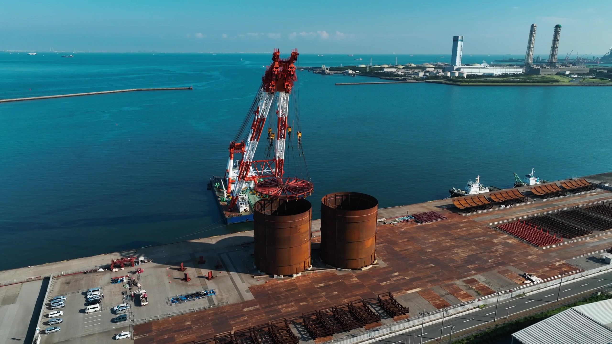
SINCE 1890 / MARINE CIVIL ENGINEERING
創業135年。海を拓き、陸をつくり、風の力を生かす場所をつくってきました。堅実な技術力を礎に、現場では一人ひとりが自分の判断で、状況の流れそのものを変えていく。
洋上でのケーソン曳航、岸壁での据え付け——海の底で、土の奥で。若築建設の現場を、そのまま。
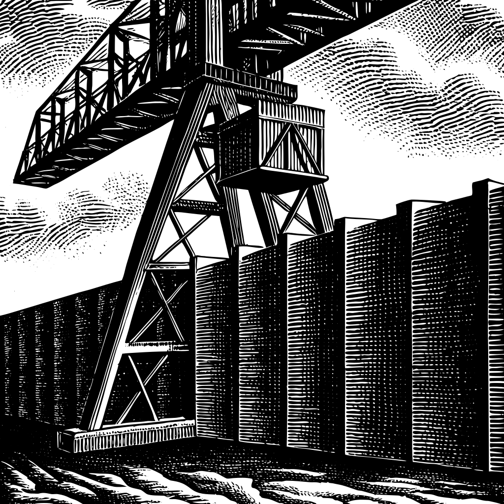
港湾・空港：海上の交通インフラを整備する、若築建設の出発点。
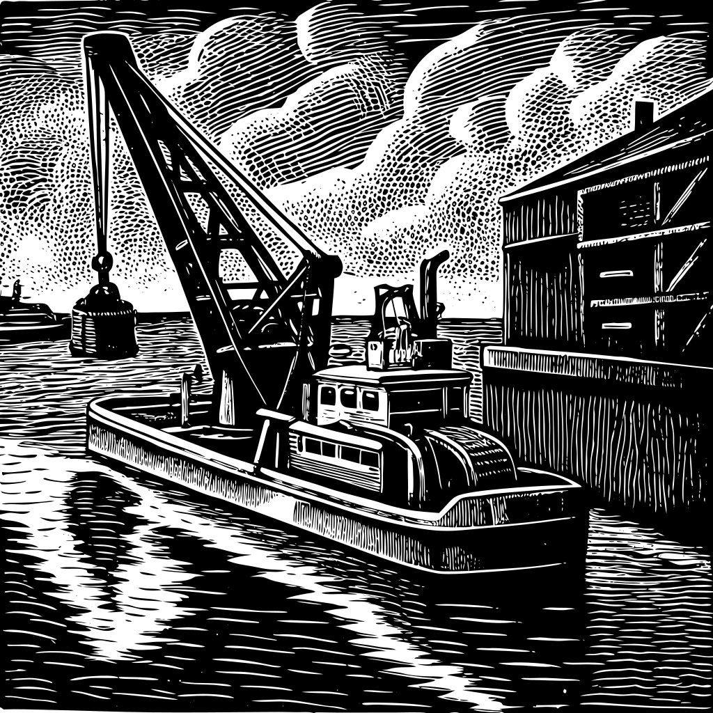
浚渫・埋立：船の通り道をつくり、物流を支える。
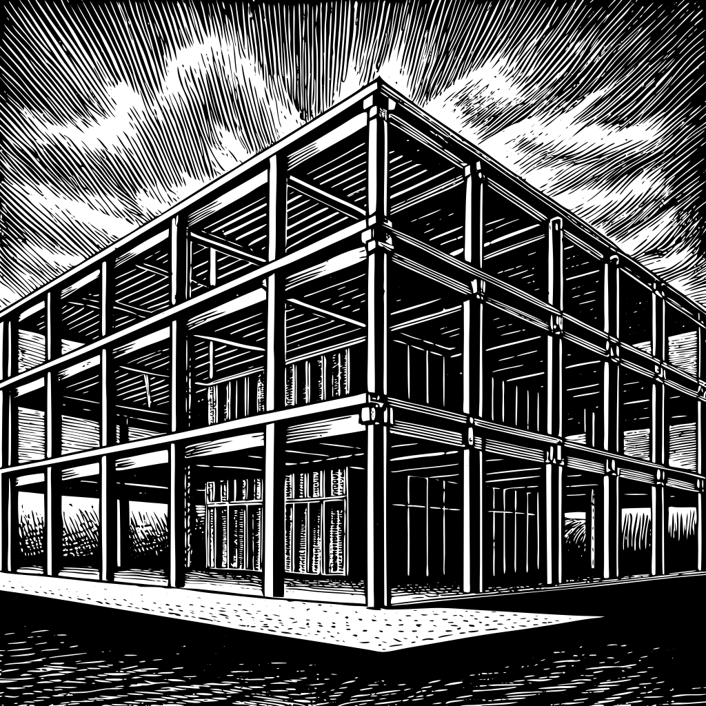
陸上土木・建築：人々の日常と安全・安心を支える。
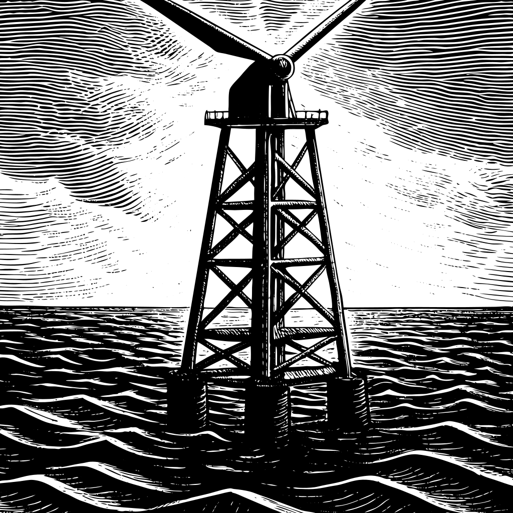
洋上風力・再生可能エネルギー：次の時代のインフラへ。
現場写真（新本牧・横浜港／湘南・西湘バイパス）

若築建設 創業135周年記念 実績紹介特設サイト：日本全国から世界まで、私たちが紡いできた信頼と実績を、ぜひご覧ください。
※当サイトに掲載されている施工実績は、弊社がこれまで手掛けてきたすべての工事を網羅したものではありません。掲載にあたり、発注者様の許可を得たものや、その他条件に基づき選定した一部の実績のみを公開しております。
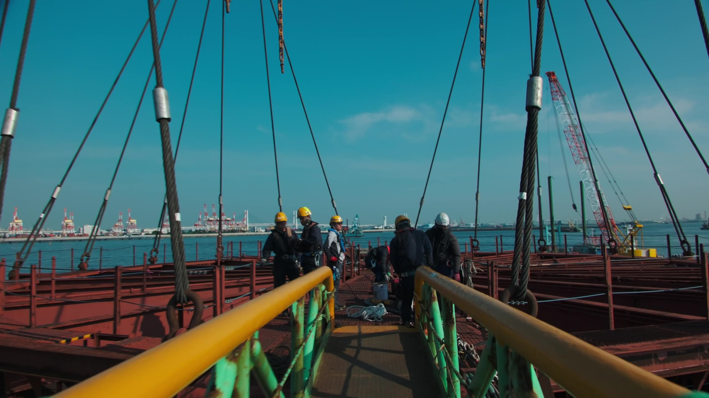
135年前、小さな漁村から始まった仕事は、今も変わらず人の手でできている。潮を読み、鋼を組み、互いに声をかけ合いながら、何人もの職人たちが一つの現場を動かしていく。
海に出て、風を受けて、汗をかく。ひとりでは持ち上がらない鋼材も、仲間がいれば、次の一手が見えてくる。その積み重ねの先に、羽田があり、港があり、今日も誰かが渡っている橋がある。
わっくんとちーちゃん、作業船「若鷲丸」は、そんな現場をずっと見てきた、いちばん身近な相棒たちだ。


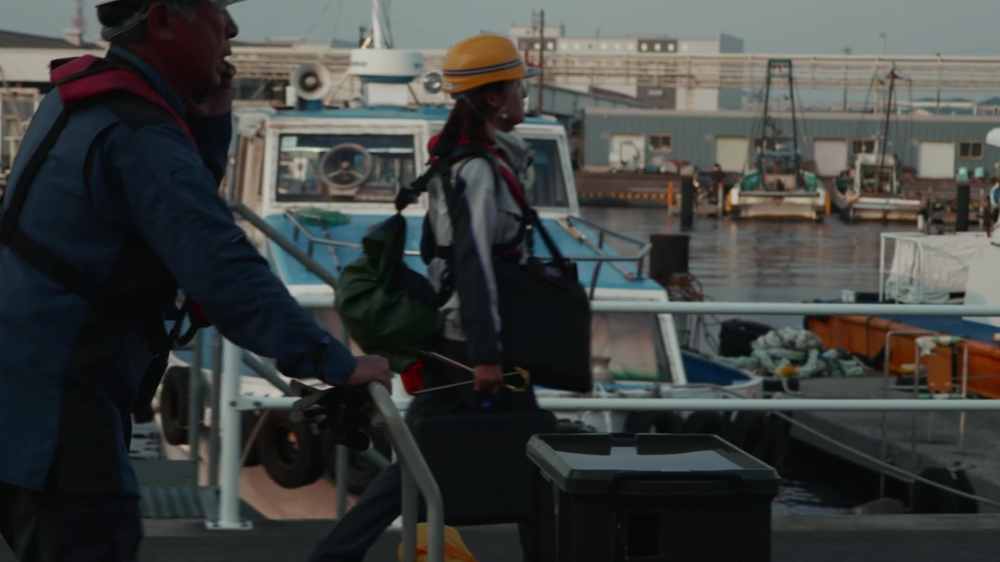


安全確認、測量、操船——一つひとつの小さな動きの積み重ねが、若築建設の現場をつくっている。
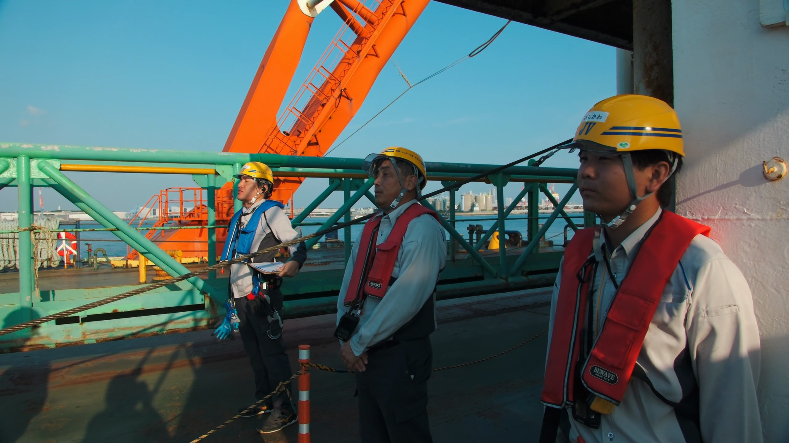
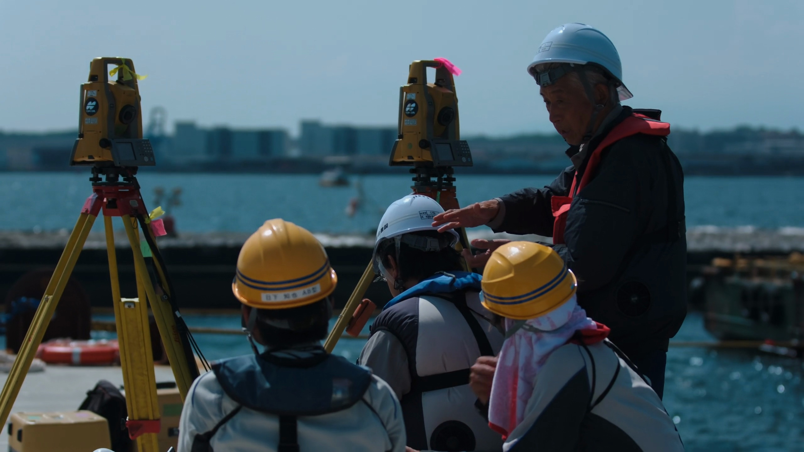
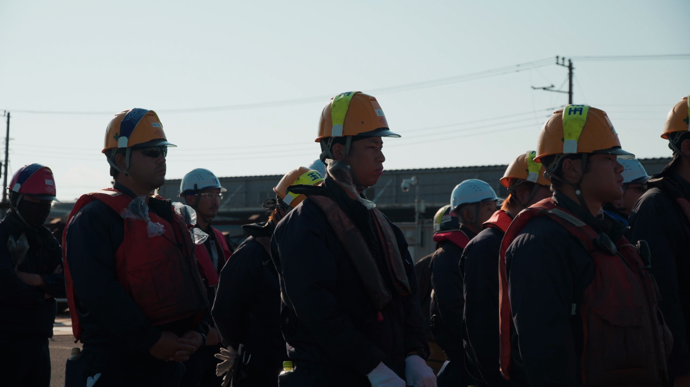
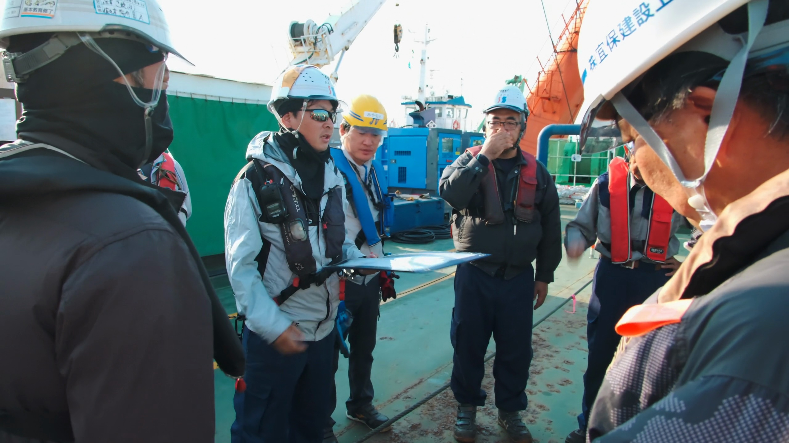
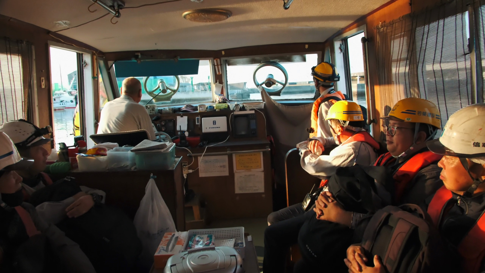
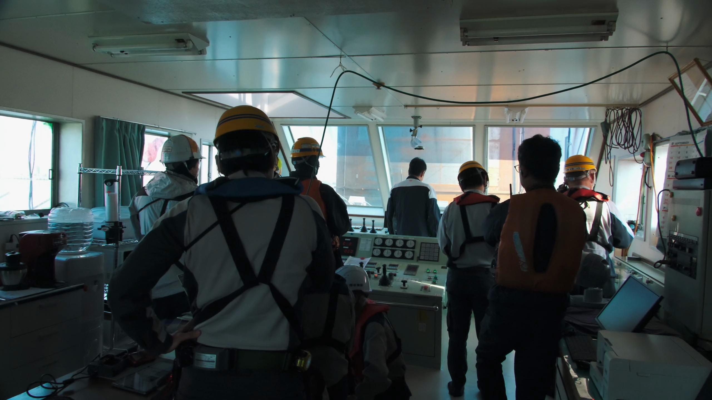
“百聞は一見に如かず”って、よく言ったもの。若築建設を、より深く、より身近に感じてもらいたいから、私たちの活動や取り組みを紹介します。